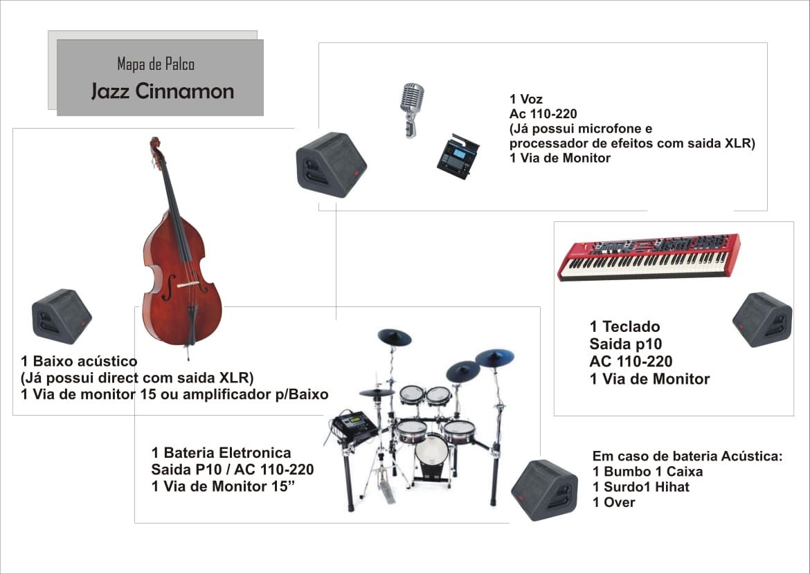

CONTRATANTE: {{Nome Contratante}}, inscrito no CNPJ sob n.º {{CNPJ}}, domiciliado na cidade de {{CIDADE CNPJ}} - {{ESTADO CNPJ}}, à {{ENDEREÇO CNPJ}} - CEP {{CEP CNPJ}}.
CONTRATADA: JAZZ CINNAMON, representada por PRODUTORA O JAZZ NOSSO DE CADA DIA LTDA, inscrita no CNPJ sob o n.º 50.322.210/0001-74, com sede em Nova Petrópolis - RS, à Rua Danilo Hass, n.º 67, Bairro Juriti - CEP: 95150-000.
As partes acima identificadas têm, entre si, justo e acertado o presente contrato de apresentação de música ao vivo por prazo determinado, que será regido pelas cláusulas seguintes e pelas condições descritas neste instrumento.
A EQUIPE CONTRATADA obriga-se a prestar seus serviços profissionais ao CONTRATANTE no dia {{DATA EVE CNPJ}}, na cidade de {{MUN EVE CNPJ}} - {{EST EVE CNPJ}} ({{LOCAL EVE CNPJ}} - {{END EVE CNPJ}}), com horário de início fixado às {{INICIO CNPJ}}, para apresentação de música ao vivo com a Banda Jazz Cinnamon pelo período de {{TEMP EVE CNPJ}}.
Fica estabelecida tolerância máxima de 30 (trinta) minutos de atraso para o início da apresentação por parte da organização do evento. Ultrapassada a tolerância, o relógio da apresentação será iniciado e o tempo de atraso será descontado proporcionalmente do tempo total contratado de {{TEMP EVE CNPJ}}, salvo exceções e imprevistos, como atrasos em cerimônias, que sejam avaliados e mutuamente acordados entre a CONTRATADA e o CONTRATANTE no momento do evento.
Caso seja do interesse do CONTRATANTE estender a apresentação, e havendo disponibilidade de agenda da EQUIPE CONTRATADA, será cobrado o valor adicional de R$ 1.500,00 (mil e quinhentos reais) por cada hora extra ou fração de hora. O pagamento referente à hora extra deverá ser confirmado pela CONTRATADA antes do início do tempo adicional.
O presente serviço será remunerado pela quantia de {{VALOR ORC}} ({{VALOR EXTENSO}}).
{{CLAUSULA_PAGAMENTO}}
A CONTRATANTE fornecerá equipamentos para a sonorização conforme citado no rider técnico em anexo fornecido pela CONTRATADA, constituídos de caixas de som, inclusive de retorno, condizentes com o espaço e o número de pessoas presentes. A CONTRATANTE compromete-se a garantir espaço adequado para a realização da apresentação, livre de intempéries climáticas. Os instrumentos musicais utilizados na apresentação são de responsabilidade da EQUIPE CONTRATADA.
As despesas com alvarás e direitos autorais das entidades arrecadadoras serão de responsabilidade exclusiva da CONTRATANTE.
As despesas com os cachês dos integrantes da Banda, hospedagem e deslocamento, quando se fizerem necessárias, serão de responsabilidade da CONTRATADA.
O presente contrato tem vigência a contar da data de assinatura até a finalização da apresentação, incluindo a desmontagem total da estrutura.
A equipe técnica e os músicos chegarão ao local com antecedência máxima de 3 (três) horas em relação ao horário de início da apresentação, período destinado exclusivamente à montagem e passagem de som. Caso o cronograma estipulado pelo CONTRATANTE exija que a montagem seja finalizada com antecedência superior a este limite, torna-se obrigatória a disponibilização de camarim privativo, ou acomodação adequada e confortável para repouso da equipe, e será cobrada Taxa de Ociosidade (Standby) no valor de R$ {{VALOR STANDBY}} ({{VALOR_STANDBY_EXTENSO}}) por hora adicional de espera da equipe no local.
A CONTRATANTE deverá disponibilizar alimentação para cinco pessoas.
A CONTRATANTE deverá disponibilizar local adequado para troca de vestimentas e espera para a apresentação.
O não comparecimento da CONTRATADA na data do evento acarretará a devolução total do valor pago pela CONTRATANTE, acrescido de multa de 10% (dez por cento) sobre esse valor. Em caso de desistência do evento, a CONTRATANTE deverá comunicar a CONTRATADA com até 60 (sessenta) dias de antecedência. Não havendo aviso prévio, o valor mencionado no item 2 não será reembolsado ao CONTRATANTE.
Reembolsos de valores por desistência do CONTRATANTE anteriores ao prazo de 60 (sessenta) dias serão acordados entre as partes mediante exposição do ocorrido para o cancelamento ou troca de data do evento. Em caso de qualquer impedimento ao início da apresentação da EQUIPE CONTRATADA ocasionado pelo CONTRATANTE, este compromete-se a pagar o valor total acordado. A EQUIPE CONTRATADA não se responsabilizará por eventos externos à sua responsabilidade que possam impedir a conclusão da apresentação, permanecendo o ajustado entre as partes previamente. (Vide item 8 do Caso Fortuito e da Força Maior).
a) A CONTRATADA não será responsabilizada pela não realização da apresentação caso ocorram eventos de força maior ou caso fortuito, de acordo com o Art. 393 do Código Civil Brasileiro, tais como:
- incêndios ou avarias na estrutura do local;
- enchentes que impeçam o acesso; falta de energia elétrica na região; decretos governamentais;
- pandemias ou problemas graves de saúde de membros essenciais da banda.
b) Problemas com alvarás, vistorias de bombeiros ou falhas nos equipamentos fornecidos pela CONTRATANTE não configuram força maior, devendo a mesma pagar o cachê integral.
I - A comunicação deve ser imediata, por escrito, para que a revisão e/ou suspensão temporária das parcelas e repactuação de datas de pagamentos e do evento evitem juros ou penalidades por atraso.
c) Em caso de força maior real, (vide alínea a), as partes tentarão remarcar o show, conforme disponibilidade de agenda da CONTRATADA, em até 60 (sessenta) dias, aproveitando o sinal já pago.
I - Caso o evento não possa ocorrer de forma nenhuma, o contrato será cancelado e os valores pagos podem ser creditados sem retenção de multas punitivas.
d) Se a remarcação for impossível por força maior, o contrato será rescindido sem multas, aplicando-se as regras abaixo sobre o sinal:
I - Se o evento de força maior atingir a CONTRATANTE ou o local: a CONTRATADA reterá o valor integral do sinal para cobrir os custos de reserva de agenda, ensaios e equipe técnica.
II - Se o evento de força maior atingir a CONTRATADA, a mesma devolverá o valor do sinal integralmente à CONTRATANTE, no prazo de até 15 dias úteis, deduzidos apenas os custos logísticos comprovadamente já pagos e não reembolsáveis.
e) A CONTRATADA fica totalmente isenta do pagamento de qualquer multa rescisória, indenização por danos morais ou lucros cessantes decorrentes do cancelamento motivado por força maior.
Fica eleito o foro da Comarca de Nova Petrópolis - RS para dirimir qualquer conflito decorrente deste contrato.
Nova Petrópolis, {{DATA CONTRATO}}.
Contratante
{{Nome Contratante}}
{{CNPJ}}
Contratada
Camila Sampaio de Oliveira
O JAZZ NOSSO DE CADA DIA LTDA (Jazz Cinnamon)
50.322.210/0001-74
